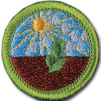

Plant Science - In-Person Class Notes
Please arrive with ample time prior to the start time of your class for registration. Remember, there will be others checking in as well that registration may take a little time, depending on the size of the class and the event held in conjunction with the class.
Your Scout uniform is required to be worn when attending this merit badge session. If you have any additional questions, please feel free to contact Brian Reiners (Scoutmater Bucky) via email at scoutmasterbucky@yahoo.com or on the phone at 612-483-0665.
Reviewing the merit badge pamphlet PRIOR to attending and doing preparation work will ensure that Scouts get the most out of these class opportunities. The merit badge pamphlet is a wealth of information that can make earning a merit badge a lot easier. It contains many of the answers and solutions needed or can at least provide direction as to where one can find the answers.
It is NOT acceptable to come unprepared to a Scoutmaster Bucky event. You can (and should) use the Scoutmaster Bucky Plant Science Merit Badge Workbook to help get a head start and organize your preparation work. Please note that the use of any workbook is merely for note taking and reference. Completion of any merit badge workbook does not warrant, guarantee, or confirm a Scout's completion of any merit badge requirements.
It should be noted that this merit badge class is not meant for those who just want to come and see what they can get done. It is possible to complete this merit badge by being properly prepared and having done the preparation work prior to the class. Preparation is a MUST! If you are not willing to participate to these expectations and standards, perhaps the Scoutmaster Bucky opportunity is not for you.
Things to remember to bring for this merit badge class:
- Merit badge blue card properly filled out and signed off by your Scoutmaster
- Plant Science Merit Badge Pamphlet
- Scout uniform
- Supporting documentation or project work pertinent to the Plant Science merit badge, which may also include a merit badge workbook for reference with notes
- A positive Scouting focus and attitude
Please read and understand the Scoutmaster Bucky Blue Card Process.
Plant Science - Online Class Notes
Please arrive with ample time prior to the start time of your class to ensure your connection to the online session is working properly. Ask people in your household to refrain from unnecessary internet usage, including but not limited to: streaming videos, online gaming, and other heavy bandwidth usage.
You will receive a link 12 to 24 hours before the class start time. Notification will come through the email address provided during the registration process, so please make sure you enter your email correctly.
Your Scout Uniform is required to be worn when attending this Online Merit Badge session. If you have any additional questions, please feel free to contact Brian Reiners; Scoutmaster Bucky via email at scoutmasterbucky@yahoo.com or on the phone at 612-483-0665.
Reviewing the Merit Badge Pamphlet PRIOR to attending and doing preparation work will insure that Scouts get the most out of these online class opportunities. The Merit Badge Pamphlet is a wealth of information that can make earning a Merit Badge a lot easier. It contains many of the answers and solutions needed or can at least provide direction as to where one can find the answers.
It is NOT acceptable to come unprepared to a Scoutmaster Bucky event. You can (and should) use the Scoutmaster Bucky American Business Merit Badge Workbook to help get a head start and organize your preparation work. Please note that the use of any workbook is merely for note taking and reference. Completion of any Merit Badge Workbook does not warrant, guarantee, or confirm a Scouts completion of any merit badge requirement(s). You can download the Scoutmaster Bucky Plant Science Merit Badge Workbook for taking notes to help you prepare.
It should be noted that this Merit Badge class is not meant for those who just want to come and see what they can get done. It is possible to complete this Merit Badge by being properly prepared and having done the preparation work prior to the class. Preparation is a MUST! If you are not willing to participate to these expectations and standards, perhaps the Scoutmaster Bucky opportunity is not for you.
Plant Science
Merit Badge
2020 Scouts BSA Requirements

Please make sure you read the top portion of this page for general participation expectations in a Scoutmaster Bucky merit badge class.
Pay careful attention to the action verbs within the requirements. An example to note:
"Tell", "explain", "describe", and "discuss" are commonly used and will require the Scout to perform these actions during the class. When these action verbs are a part of any requirement, Scouts are expected to be prepared to share. Reading responses is not acceptable since it does not fulfill the requirement of showing the Scout's knowledge and understanding.
1.
Make a drawing and identify five or more parts of a flowering plant. Tell what each part does.
2.
Explain photosynthesis and tell why this process is important. Tell at least five ways that humans depend on plants.
3.
Explain how honeybees and other pollinating insects are important to plant life.
4.
Explain how water, light, air, temperature, and pests affect plants. Describe the nature and function of soil and explain its importance. Tell about the texture, structure, and composition of fertile soil. Tell how soil may be improved.
5.
Tell how to propagate plants by seeds, roots, cuttings, tubers, and grafting. Grow a plant by ONE of these methods.
6.
List by common name at least 10 native plants and 10 cultivated plants that grow near your home. List five invasive, nonnative plants in your area and tell how they may be harmful. Tell how the spread of invasive plants may be avoided or controlled in ways that are not damaging to humans, wildlife, and the environment.
7.
Name and tell about careers in agronomy, horticulture, and botany. Write a paragraph about a career in one of these fields that interests you.
8.
Choose ONE of the following options and complete each requirement:
Option 1: Agronomy
A.
Describe how to prepare a seedbed.
B.
Make and use a seed germination tester to test 50 seeds of four of the following plants: corn, cotton, alfalfa, soybeans, clover, wheat, rice, rye, barley. Determine the percentage of live seeds.
C.
Tell about one important insect pest and one important disease that damage each of the following: corn, small grains, cotton. Collect and name five weeds that compete with crops in your locality. Tell how to control these weeds without harming people, wildlife, or useful insects.
D.
On a map of the United States, identify the chief regions where corn, cotton, forage crops, small grain crops, and oil crops grow. Tell how climate and location of these regions make them leaders in the production of these crops.
E.
Complete ONE of the following alternatives:
(1)
Corn
(a)
Grow a plot of corn and have your plot inspected by your counselor. Record seed variety or experimental code number.
(b)
Tell about modern methods of commercial corn farming and the contributions that corn makes to today’s food and fuel supply.
(c)
Tell about an insect that can damage corn, and explain how it affects corn production and how it is controlled.
(2)
Cotton
(a)
Grow a plot of cotton and have your plot inspected by your counselor.
(b)
Tell about modern methods of commercial cotton farming, and about the uses of cotton fiber and seed and the economic value of this crop.
(c)
Tell about an insect that can damage cotton, and explain how it affects cotton production and how it is controlled.
(3)
Forage Crops
(a)
Collect, count, and label samples of each for display: perennial grasses, annual grasses, legumes, and broadleaf weeds. Indicate how each grass and legume is used. Keep a log of the site where you found each sample and share it with your counselor.
(b)
Explain how legumes can be used to enrich the soil and how they may deplete it under certain conditions. Explain how livestock may enrich or deplete the soil.
(c)
Name five poisonous plants that are dangerous to livestock, and tell the different ways of using forage crops as feed for livestock.
(4)
Small Grains
(a)
Give production figures for small grain crops listed in the U.S. Statistical Report or Agricultural Statistics Handbook for the latest year available.
(b)
Help in harvesting a crop of grain. Tell how to reduce harvesting losses and about modern methods of growing one small grain crop.
(c)
Visit a grain elevator, flour mill, cereal plant, feed or seed company. Talk with the operator. Take notes, and describe the processes used and tell your patrol, troop, or class about your visit.
(5)
Oil Crops
(a)
Grow a plot of soybeans and have your plot inspected by your counselor.
(b)
Tell about modern methods of growing soybeans on a commercial scale, and discuss the contributions soybeans make to our food supply.
(c)
Explain why a killing frost just after emergence is critical for soybeans.
Option 2: Horticulture
A.
Visit one of the following places and tell what you learned about horticulture there: public garden, arboretum, retail nursery, wholesale nursery, production greenhouse, or conservatory greenhouse.
B.
Explain the following terms: hardiness zone, shade tolerance, pH, moisture requirement, native habitat, texture, cultivar, ultimate size, disease resistance, habit, evergreen, deciduous, annual, perennial. Find out what hardiness zone you live in and list 10 landscape plants you like that are suitable for your climate, giving the common name and scientific name for each.
C.
Do ONE of the following:
(1)
Explain the difference between vegetative and sexual propagation methods, and tell some horticultural advantages of each. Grow a plant from a stem or root cutting or graft.
(2)
Transplant 12 seedlings or rooted cuttings to larger containers and grow them for at least one month.
(3)
Demonstrate good pruning techniques and tell why pruning is important.
(4)
After obtaining permission, plant a tree or shrub properly in an appropriate site.
D.
Do EACH of the following:
(1)
Explain the importance of good landscape design and selection of plants that are suitable for particular sites and conditions.
(2)
Tell why it is important to know how big a plant will grow.
(3)
Tell why slower-growing landscape plants are sometimes a better choice than faster-growing varieties.
E.
Choose ONE of the following alternatives and complete EACH of the requirements:
(1)
Bedding Plants
(a)
Grow bedding plants appropriate for your area in pots or flats from seed or cuttings in a manufactured soil mix. Explain why you chose the mix and tell what is in it.
(b)
Transplant plants to a bed in the landscape and maintain the bed until the end of the growing season. Record your activities, observations, materials used, and costs.
(c)
Demonstrate mulching, fertilizing, watering, weeding, and deadheading, and tell how each practice helps your plants.
(d)
Tell some differences between gardening with annuals and perennials.
(2)
Fruit, Berry, and Nut Crops
(a)
Plant five fruit or nut trees, grapevines, or berry plants that are suited to your area. Take full care of fruit or nut trees, grapevines, or berry plants through one season.
(b)
Prune a tree, vine, or shrub properly. Explain why pruning is necessary.
(c)
Demonstrate one type of graft and tell why this method is useful.
(d)
Describe how one fruit, nut, or berry crop is processed for use.
(3)
Woody Ornamentals
(a)
Plant five or more trees or shrubs in a landscape setting. Take full care of the trees or shrubs you have planted for one growing season.
(b)
Prune a tree or shrub properly. Explain why pruning is necessary.
(c)
List 10 trees (in addition to those listed in general requirement 5 above) and tell your counselor how each is used in the landscape. Give the common and scientific names.
(d)
Describe the size, texture, color, flowers, leaves, fruit, hardiness, cultural requirements, and any special characteristics that make each type of tree or shrub attractive or interesting.
(e)
Tell five ways trees help improve the quality of our environment.
(4)
Home Gardening
(a)
Design and plant a garden or landscape that is at least 10 by 10 feet.
(b)
Plant 10 or more different types of plants in your garden. Tell why you selected particular varieties of vegetables and flowers. Take care of the plants in your garden for one season.
(c)
Demonstrate soil preparation, staking, watering, weeding, mulching, composting, fertilizing, pest management, and pruning. Tell why each technique is used.
(d)
Tell four types of things you could provide to make your home landscape or park a better place for birds and wildlife. List the common and scientific names of 10 kinds of native plants that are beneficial to birds and wildlife in your area.
Option 3: Field Botany
A.
Visit a park, forest, Scout camp, or other natural area near your home. While you are there:
(1)
Determine which species of plants are the largest and which are the most abundant. Note whether they cast shade on other plants.
(2)
Record environmental factors that may influence the presence of plants on your site, including latitude, climate, air and soil temperature, soil type and pH, geology, hydrology, and topography.
(3)
Record any differences in the types of plants you see at the edge of a forest, near water, in burned areas, or near a road or railroad.
B.
Select a study site that is at least 100 by 100 feet. Make a list of the plants in the study site by groups of plants: canopy trees, small trees, shrubs, herbaceous wildflowers and grasses, vines, ferns, mosses, algae, fungi, lichens. Find out which of these are native plants and which are exotic (or nonnative).
C.
Tell how an identification key works and use a simple key to identify 10 kinds of plants (in addition to those in general requirement 5 above). Tell the difference between common and scientific names and tell why scientific names are important.
D.
After gaining permission, collect, identify, press, mount, and label 10 different plants that are common in your area. Tell why voucher specimens are important for documentation of a field botanist’s discoveries.
E.
Obtain a list of rare plants of your state. Tell what is being done to protect rare plants and natural areas in your state. Write a paragraph about one of the rare plants in your state.
F.
Choose ONE of the following alternatives and complete EACH of its requirements:
(1)
Tree Inventory
(a)
Identify the trees of your neighborhood, a park, a section of your town, or a Scout camp.
(b)
Collect, press, and label leaves, flowers, or fruits to document your inventory.
(c)
List the types of trees by scientific name and give common names. Note the number and size (diameter at 4 feet above ground) of trees observed and determine the largest of each species in your study area.
(d)
Lead a walk to teach others about trees and their value, OR write and distribute materials that will help others learn about trees.
(2)
Transect Study
(a)
Visit two sites, at least one of which is different from the one you visited for Field Botany requirement 1.
(b)
Use the transect method to study the two different kinds of plant communities. The transects should be at least 500 feet long.
(c)
At each site, record observations about the soil and other influencing factors AND do the following. Then make a graph or chart to show the results of your studies.
(1)
Identify each tree within 10 feet of the transect line.
(2)
Measure the diameter of each tree at 4 feet above the ground, and map and list each tree.
(3)
Nested Plot
(a)
Visit two sites, at least one of which is different from the one you visited for Field Botany requirement 1.
(b)
Mark off nested plots and inventory two different kinds of plant communities.
(c)
At each site, record observations about the soil and other influencing factors AND do the following. Then make a graph or chart to show the results of your studies.
(1)
Identify, measure, and map each tree in a 100-by-100-foot plot. (Measure the diameter of each tree at 4 feet above the ground.)
(2)
Identify and map all trees and shrubs in a 10-by-10-foot plot within each of the larger areas.
(3)
Identify and map all plants (wildflowers, ferns, grasses, mosses, etc.) of a 4-by-4-foot plot within the 10-by-10-foot plot.
(4)
Herbarium Visit
(a)
Write ahead and arrange to visit an herbarium at a university, park, or botanical garden; OR, visit an herbarium Web site (with your parent’s permission).
(b)
Tell how the specimens are arranged and how they are used by researchers. If possible, observe voucher specimens of a plant that is rare in your state.
(c)
Tell how a voucher specimen is mounted and prepared for permanent storage. Tell how specimens should be handled so that they will not be damaged.
(d)
Tell about the tools and references used by botanists in an herbarium.
(5)
Plant Conservation Organization Visit
(a)
Write ahead and arrange to visit a private conservation organization or government agency that is concerned with protecting rare plants and natural areas.
(b)
Tell about the activities of the organization in studying and protecting rare plants and natural areas.
(c)
If possible, visit a nature preserve managed by the organization. Tell about land management activities such as controlled burning, or measures to eradicate invasive (nonnative) plants or other threats to the plants that are native to the area.